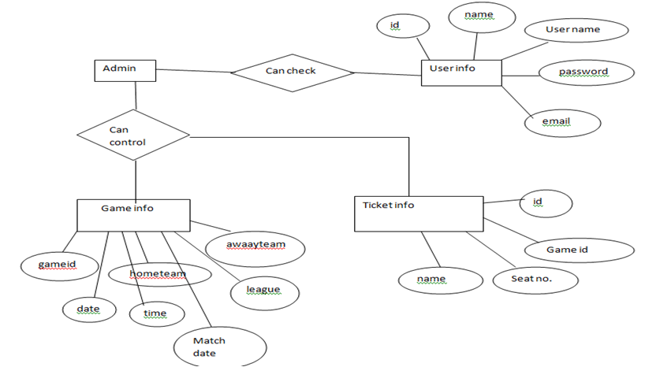

GROUP MEBBERS Hasanur Rahman 1411418042 Hashmir Rafsan ToronDate Created : 5th October 2017
Table of content
| name | Date | Reason For Changes | Vision |
|---|---|---|---|
| Hasan | |||
| Hashmir | |||
| Nazia | |||
| Tamanna |
This project is web-based system. Online stadium ticket reservation system
is basically made for providing the customers with adequate service, anywhere
and anytime. This system creates a huge relief for the football fans. This system
provides help to the user as they can inquire about seat, its ticket price, available
seats, about upcoming events, date and time as well etc. They don’t need to walk to the
stadium for their reservation purpose. There is login and password service for user
and regular user to use this system.
During writing a proper SRS we will follow some rules. Here we will use
Times New Roman. Our font size will be 12.Morever we have title and also some sub title.
For title we will use font 14 and will bold it for better understanding.
Then the sub title will also be font 12 and bold for easily noticing.
For establishing a full project there have to work a lots of people like developers, project managers,
marketing staff, users, testers, and documentation writers. They have different tasks for
completing a full project. A project manager handles all the project, developer
will develop the project where it will need, marketing staffs will publicly spread
the benefit of using the project, testers will tet the software after completing it,
documentation writers will write documents which is related with this software.
After doing all the task they will deliver it to users so that they can be benefited by using this software.
People can see the able ablity of the seat in the stadium. There is a pre-booking
option which is helpfull for ensuring the seat. All the matches schedul will be
also publish in this webside.
In India there is a side where any one can book seat for movie in the cinema hall, matches seat for games and sports. that web side name is Book My Show
[1].Lars Mathiassen et.al 2000. Object oriented analysis & design. Marko, Aalborg. Dk .
[2].Wendy Chisholm, Gregg Vanderheiden & Ian Jacobs, 1999, Web Content Accessibility Guildlines 1.0,
/http://www.w3.org/TR/WAI-WEBCONTENT/ (Date Accessed: 14/02/06).
[3].Matt May-W3C, 2005,Inaccessibility of CAPTCHA
/http://www.w3.org/TR/turingtest/(DateAccess:21/03/06)
[4].Luke Welling and Laura Thomson, 2005, PHP and MySQL Web Development, Sams Publishing, United States of America
[5].Jakob Nielsen, 2000, Designing Web Usability: The Practice of Simplicity, 2000, New Riders Publishing,
United States of America.
[6].H. M. Deitel, P. J. Deitel & Tem. R. Nieto, 2002, Internet & World Wide Web How to Program, Pearson Education
– Prentice Hall, United States of America.
[7].Oloyede Alaya, Adewole, "Developmentof an Online Bus
Ticket Reservation System for a Transportation Service in Nigeria",
Computer Engineering and Intelligent Systems, vol. 5, no. 12,2014, ISSN 2222-2863.
Describe the context and origin of the product being specified in this SRS.
For example, state whether this product is a follow-on member of a product family, a replacement for certain existing systems, or a new, self-contained product.
If the SRS defines a component of a larger system, relate the requirements of the larger system to the functionality of this software and identify interfaces between the two.
A simple diagram that shows the major components of the overall system, subsystem interconnections,
and external interfaces can be helpful
The idea about this product is to reduce the hardship of customers standing in queues to collect the ticket for matches.
This product is a follow on member of ticket reservation system available in different stadiums that have websites and online ticket reservation system.
But, our product is anonymous and is not monitored or governed by any specific stadiums ticket management system.
Our product is a self-contained product. Here, the user will have to scroll through the list of matches available and select a match
to reserve the stadium ticket for the selected game. 
Summarize the major functions the product must perform or must let the user perform. Details will be provided in Section 3,
so only a high level summary (such as a bullet list) is needed here.
Organize the functions to make them understandable to any
reader of the SRS.
A picture of the major groups of related requirements and how
they relate, such as a top level data flow diagram or object
class diagram, is often effective.
• The stadium management system software offers the user to primarily create an account by signing up in the software.
• The user will need a Full Name, User Name, Email and Password to create the account.
• Once the account is created, the user can Log In the software and the homepage will be displayed.
• In the homepage, the user will be notified about the next match and upcoming matches.
• Each game is identified by a unique game code so that one game is not mixed with the other game.
• The user can enter the game code and book the ticket.
• To book the game ticket, the user will need few data to be filled up like Home team, Away team, League, Match Date, Time.
• After the booking, a dialogue box will appear where the user’s booked tickets will be displayed.
• The user can also search for other games once after booking the ticket.
To be specific about users, there can be few characteristics on which the users can be differentiated.
Few examples are- • Frequency of use
• Subset of product function used
• Technical expertise on the booking procedure
• Security details and privileges offered
• Educational level of user
• Experience in software of this class
Now, based on the different classes of users, there should be few characteristics of the software that needs to be taken into consideration.
Though, there might be several common reasons for different user classes but
the most prominent are- • The software should be effective and efficient so that it doesn’t fade its
performance when subjected to frequent uses.
• The software needs to be user friendly and easy to access.
• The features should be easy to understand and access.
• The software should be secured so that the users don’t have any
complains with their account’s privacy.
The software should feature easy and understandable English so it is not
complicated to users with medium or below educational standard.
The software should make the users feel comfortable and should be similar to other
booking service software so that the users can
connect the dots.
Lastly, the most important customers of this product will be the average and above average spectators who are more than capable to afford the ticket
fare for the matches. And those customers are most likely to be efficient
in using this kind of products, should be easily able to access the
credentials required for this product. And to be specific, all the classes of
people in respect to age classes will fall for this product because nobody in
this era would like to waste their time standing in queues to collect
their tickets for their desired matches.
Booking seat enables the users to book seat from anywhere . This particular software will enable them with
features of viewing the gallery from their favourite view. Give them the facilities they want.
It will keep the viewers updated with match schedules giving time to time reminders
if the views want.
The viewers can also check the updated results.
In this system admin can maintain all the event information and comments etc.
In this system admin can maintain the registered users , manage news ,and also admin can
generates a reports and manage the whole system .Admin also can add event and
changes event schedule as well.
The only way in which systems will meet their performance targets is for them to be
specified clearly and unambiguously. In many cases performance requirements are never
ridged as system that does not fully meet its defined performance requirements may
still be released as other consideration such as time to market.
In order to assess the performance of a system the following must be clearly specified:
• Response Time
• Workload
• Scalability
• Platform
Internet safety is a must-have while you are doing something on the Web.
To be secure online, you must use some techniques so that you can be protected from scammers,
viruses, and predators. If you do not take proper precautions, then you would be at risk.
First of all, if you are using Windows, then you have to download Internet security
software. As a result of having this kind of security, viruses and hackers would be blocked.
However, make sure that you receive regular security updates from the provider.
Next, beware of online scammers. For instance, there are scammers who promise you
will become rich in a short span of time, but you have to invest a certain amount first.
Another scam is perpetrated through an e-mail informing you that you have a dying relative
who needs financial support and so on. To avoid being cheated, never give out your credit card information
and bank account numbers. In case you have to make online purchases, sign up for an
account only with reliable and reputable websites.
No matter how big your company is or what it does,security is
a primary consideration when choosing a Web service for all applications.
The key Web services security requirements are given below:
1. Authentication
2. Authorization
3. Data Protection
4. Non repudiation
Business Rules also give you the criteria and conditions for making these decisions.
0After making this website we have to follow some rules for better
market value which is business rules.If our website is helpful
for general people business profit will be increased.